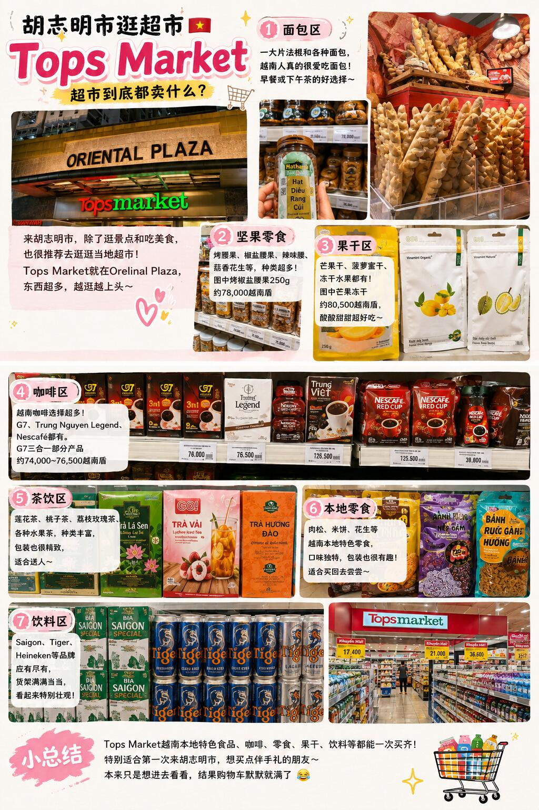

購物筆記 · 來自 Obsidian
胡志明市逛超市｜越南超市到底都卖什么？

来胡志明市，除了逛景点和吃美食，也很推荐去逛逛当地超市。
这次去的是 Tops Market，进去以后真的很容易越逛越久😂
- 店名：Tops Market Âu Cơ（位於 Oriental Plaza）
- 地址：685 Âu Cơ, Tân Phú, Hồ Chí Minh
- 營業時間：每日 07:30 – 22:00
- 評分：4.1 星（3451 則評論）
- 電話：028 6285 8285
一大片法棍和各种面包，看起来就很有越南的感觉。买几个当早餐或者路上当零食都不错。
越南特色比较明显的就是腰果、花生这类零食。烤椒盐腰果 250g 大约 78,000 越南盾，还有辣味、蒜香等不同口味。
芒果干、菠萝蜜干、冻干榴莲都有。芒果冻干大约 80,500 越南盾，喜欢水果零食的真的可以逛逛。
G7、Trung Nguyen Legend、Nescafé 等都能看到，选择特别多。
- G7 三合一部分产品大约 74,000～76,500 越南盾
- Legend 咖啡约 125,500 越南盾
- Nescafe 约 39,800 越南盾
- 买回去当伴手礼挺方便。
莲花茶、桃子茶、荔枝玫瑰茶，还有各种水果茶，种类比想象中丰富。
肉松、米饼、花生等都能看到，有些包装和口味真的很有当地特色。
Saigon、Tiger、Heineken 等品牌都有，货架满满当当，看起来特别壮观。
整体逛下来，最大的感受就是：越南超市真的很适合买当地食品和伴手礼。尤其是咖啡、腰果、果干这些，价格相对直观，选择又多，很适合边逛边挑。本来只是想进去看看，最后购物车还是默默装满了🤣
📸 實拍（共 2 張）

📌 資料來源：內容與全部 2 張照片來自小紅書實地帖文（Pebble 擷取至 Obsidian）。出發前請以現場資訊為準。